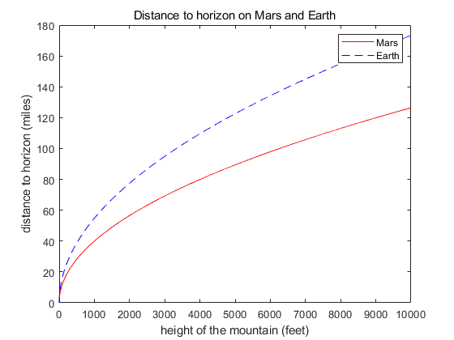

CS368 Summer 2018 Programming Assignment 1
- Name: Yuhan Xie
- Due Date: Tuesday, July 3 by 11:59 pm
Contents
Problem 1: Creating a tip table
Create and display a matrix with four columns:
- column 1 contains bill totals from $5 to $100 in increments of $5
- column 2 contains the tip amount if the tip is 15% of the bill
- column 3 contains the tip amount if the tip is 18% of the bill
- column 4 contains the tip amount if the tip is 20% of the bill
clear format bank % this will format money values nicely tips = [5:5:100]'; % create the vector of each amount of money tips = tips(:,[1 1 1 1]); tips = tips .* [1 0.15 0.18 0.2]; % calculate the amount of tips in each proportion disp(tips) format short % change formatting back to default setting
5.00 0.75 0.90 1.00
10.00 1.50 1.80 2.00
15.00 2.25 2.70 3.00
20.00 3.00 3.60 4.00
25.00 3.75 4.50 5.00
30.00 4.50 5.40 6.00
35.00 5.25 6.30 7.00
40.00 6.00 7.20 8.00
45.00 6.75 8.10 9.00
50.00 7.50 9.00 10.00
55.00 8.25 9.90 11.00
60.00 9.00 10.80 12.00
65.00 9.75 11.70 13.00
70.00 10.50 12.60 14.00
75.00 11.25 13.50 15.00
80.00 12.00 14.40 16.00
85.00 12.75 15.30 17.00
90.00 13.50 16.20 18.00
95.00 14.25 17.10 19.00
100.00 15.00 18.00 20.00
Problem 2: Density of freshwater
Shows water density under each temperature
clear TF = [40 68 100]'; TC = 5/9*(TF - 32); d = 5.5289 * 10^(-8)*TC.^3 - 8.5016*10^(-6)*TC.^2 + 6.5622*10^(-5)*TC + 0.99987; disp("Freshwater density is "+num2str(d(1))+" at "+num2str(TF(1))+" F"); disp("Freshwater density is "+num2str(d(2))+" at "+num2str(TF(2))+" F"); disp("Freshwater density is "+num2str(d(3))+" at "+num2str(TF(3))+" F");
Freshwater density is 1 at 40 F Freshwater density is 0.99822 at 68 F Freshwater density is 0.9932 at 100 F
Problem 3: Distance to horizon
clear h = 0:1:10000; % set increment to 1 dmars = sqrt(2*4217*5280.*h + h.^2)/5280; % calculate the distance on Mars dearth = sqrt(2*7926*5280.*h + h.^2)/5280; % calculate the distance on Earth figure plot(h, dmars,'r', h, dearth, 'b--') title("Distance to horizon on Mars and Earth") xlabel("height of the mountain (feet)") ylabel("distance to horizon (miles)") legend("Mars", "Earth")